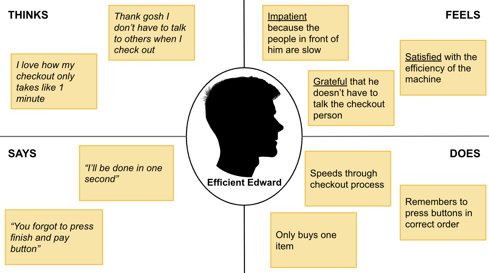

Personas

Stressed Sally is a college student. She is rushing between classes and is trying to buy a diet coke and a protein bar between classes. Because Sally is stressed, she forgets to press the buttons in the correct order, which causes the machine to glitch. Additionally, the scanner malfunctions while Sally is using the machine, so she has to call the actual checkout person over for help. The Stressed Sally persona represents users who get confused by all the different steps one must follow, as well as the group of users who have to deal with the machine not working because she dealt with both of these issues while checking out.
Efficient Edward is a businessman who often has to stop at CVS on the way home to pick up one or two items. He doesn’t personally face any problems with the interface; however, he does have to wait longer than expected while the people in front of him struggle. The Efficient Edward persona represents the group of users who use the machine effectively to purchase only one item and also don’t run into any issues regarding the machine breaking.
return to top